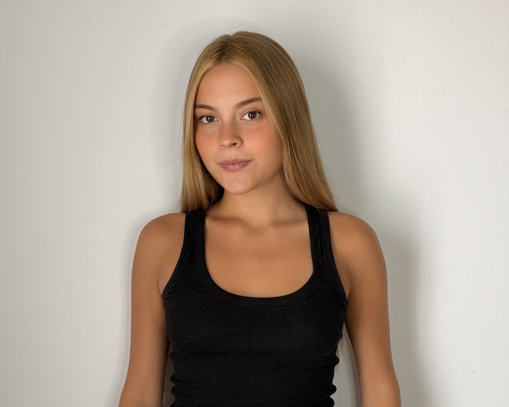

Sobre la autora
Estudiante de Comunicación Audiovisual
y artista de teatro musical
Hola, soy Trini Ortiz, estudiante de Comunicación Audiovisual y artista en formación dentro del teatro musical.
Este proyecto surge como una forma de acercar la escena teatral cordobesa desde un recorrido visual, simple y accesible, reuniendo algunos espacios, propuestas y estilos que forman parte de la actividad cultural de la ciudad.
La página busca funcionar como una pequeña guía introductoria para descubrir distintos espacios teatrales de Córdoba y explorar la diversidad de propuestas que conviven dentro de su escena artística.
Les deseo mucha mierda,
Trini ♡
Proyecto académico realizado en 2026 ✦